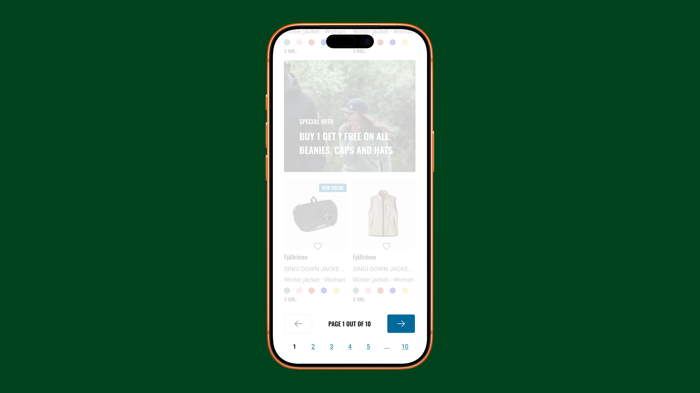
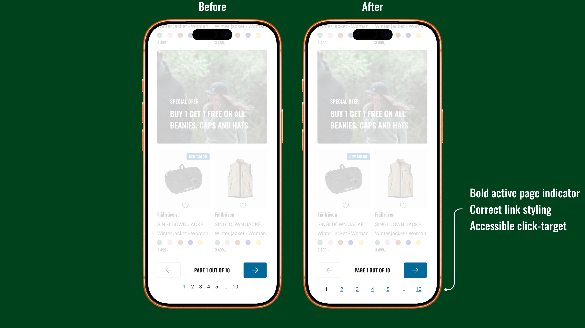

Pagination

The pagination on Naturkompaniet's e-commerce site had an inverted logic — the active page looked clickable while the actual links looked like plain text. This risked both confusing users and creating frustrating dead-end clicks. Click targets were also too small, raising accessibility concerns.
I was tasked with redesigning the pagination to fix the interaction logic and improve accessibility.
Before jumping into design, I evaluated whether pagination was the right pattern at all. Alternatives like infinite scroll and load more were considered, but given the size of the product catalogue, pagination proved the better fit. Click-rate data from Clarity also confirmed that the arrow icons were frequently used, indicating the pattern worked. The implementation was the problem.
Redesigned and documented the pagination component in Figma, ensuring accessibility throughout.
The finalised design and requirements were documented and handed off to the development team via Jira.
The solution focused on correcting the interaction logic, improving accessibility, and giving users a clearer sense of their position within the page range.
The active page indicator was restyled to reflect current state, while the navigable page numbers were given clear link styling to communicate clickability.
The click targets were enlarged to meet accessibility standards (WCAG 2.2 AA), making the component easier to interact with for all users.
The active page indicator was made bold, giving users a clearer sense of their current position within the page range.

The redesigned pagination was successfully implemented on Naturkompaniet's e-commerce site. While the arrow icons remained the primary navigation method, the updated component showed a modest improvement in page number interactions — suggesting that the clearer styling and larger click targets made the pattern more discoverable and easier to use.